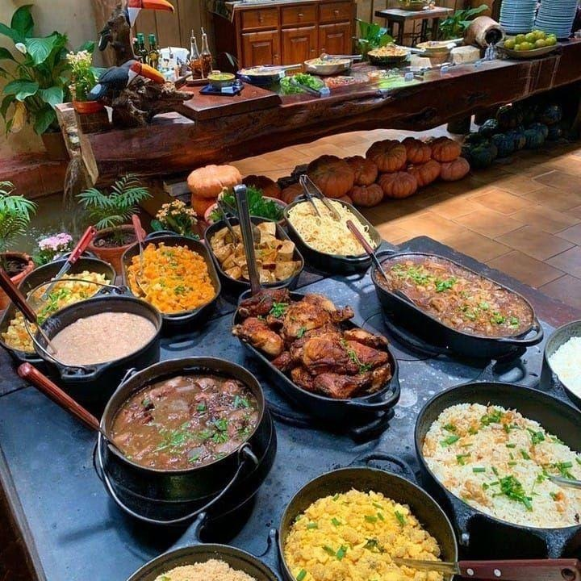

Cardápio

Feijoada Completa
Feijão preto, carnes variadas, arroz branco, farofa, couve e laranja.
Opções: Frango assado, saladas variadas e sobremesa do dia.
Churrasco ao Fogo de Chão
Picanha, costela, linguiça, ar tropeiro e farofa.
Opções: Vinagrete, pão de alho e sobremesa típica.
Prato Feito Tradicional
Bife acebolado, arroz, feijão, batata e salada.
Opções: Frango à parmegiana, macarronada e pudim.
Refrigerantes, sucos naturais, água, cervejas artesanais e vinhos selecionados.
Pudim de leite, mousse de maracujá, doce de leite, frutas da estação e café.
Pão de queijo, pastéis, torresmo e aperitivos variados.